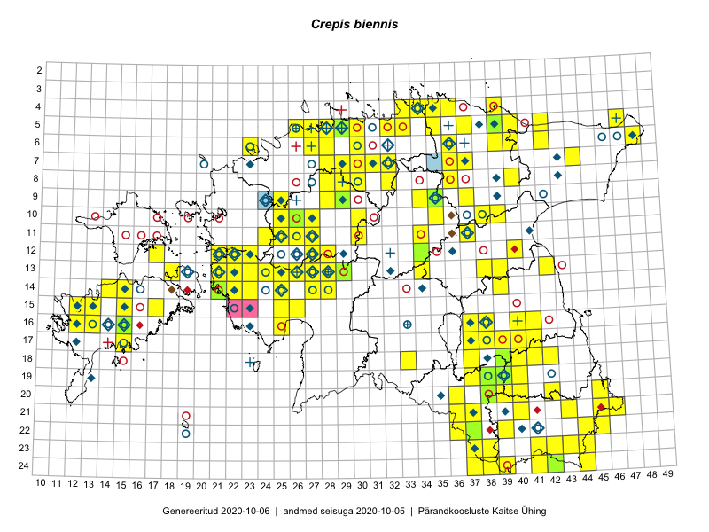

Crepis biennis
Uuendatud: 2016-12-08
Kaardile koondatud taksonid: Crepis biennis L.

Kaart põhineb 155 kirjel, neist vaatlusi 151 ja eksemplare 4. Taksonit on leitud 120 ruudust.
| Ruut | Vaatleja(d) | Vaatlusaeg | Kirje tüüp | Viide andmebaasikirjele |
|---|---|---|---|---|
| ? | Malle Leht | 2015-05-16 | ruut/ala | vaata PlutoFis |
| ? | Malle Leht | 2015-07-09 | ruut/ala | vaata PlutoFis |
| 16-40 | Thea Kull | 2015-07-07 | ruut/ala | vaata PlutoFis |
| 14-15 | Toomas Kukk, Eerik Leibak | 2015-08-09 | ruut/ala | vaata PlutoFis |
| 13-26 | Toomas Kukk, Thea Kull, Timo Luhamäe, Ott Luuk, Peedu Saar | 2015-06-28 | ruut/ala | vaata PlutoFis |
| 23-43 | Ott Luuk, Peedu Saar | 2015-08-12 | ruut/ala | vaata PlutoFis |
| 06-42 | Peedu Saar, Sander Laherand | 2015-05-30 | ruut/ala | vaata PlutoFis |
| 18-40 | Malle Leht | 2015-07-25 | ruut/ala | vaata PlutoFis |
| ? | Malle Leht | 2015-07-28 | ruut/ala | vaata PlutoFis |
| 18-40 | Malle Leht | 2015-07-27 | ruut/ala | vaata PlutoFis |
| 12-34 | Toomas Kukk, Tiit Hallikma | 2015-06-12 | ruut/ala | vaata PlutoFis |
| ? | Malle Leht | 2015-07-08 | ruut/ala | vaata PlutoFis |
| 18-39 | Malle Leht | 2015-07-08 | ruut/ala | vaata PlutoFis |
| 12-40 | Peedu Saar, Eerik Leibak | 2015-08-16 | ruut/ala | vaata PlutoFis |
| 06-27 | Toomas Kukk | 2015-06-19 | ruut/ala | vaata PlutoFis |
| 05-47 | Tiit Hallikma, Toomas Kukk | 2015-07-22 | ruut/ala | vaata PlutoFis |
| 05-32 | Rein Kalamees, Kersti Püssa | 2015-08-10 | ruut/ala | vaata PlutoFis |
| 04-35 | Rein Kalamees, Kersti Püssa | 2015-08-25 | ruut/ala | vaata PlutoFis |
| 04-33 | Rein Kalamees, Kersti Püssa | 2015-09-12 | ruut/ala | vaata PlutoFis |
| 07-44 | Tiit Hallikma, Toomas Kukk | 2015-07-20 | ruut/ala | vaata PlutoFis |
| 05-35 | Rein Kalamees, Kersti Püssa | 2015-08-16 | ruut/ala | vaata PlutoFis |
| 05-33 | Rein Kalamees, Kersti Püssa | 2015-09-12 | ruut/ala | vaata PlutoFis |
| 06-48 | Ott Luuk, Hannes Pehlak | 2015-07-21 | ruut/ala | vaata PlutoFis |
| 17-39 | Thea Kull, Peedu Saar | 2015-06-17 | ruut/ala | vaata PlutoFis |
| 17-38 | Thea Kull, Peedu Saar | 2015-06-17 | ruut/ala | vaata PlutoFis |
| 16-38 | Thea Kull, Eerik Leibak | 2015-07-03 | ruut/ala | vaata PlutoFis |
| 21-45 | Toomas Kukk, Timo Luhamäe, Kersti Tambets, Sten Mander, Janika Sammasto | 2014-07-30 | ruut/ala | vaata PlutoFis |
| 12-17 | Eeva-Maria Jeletsky, Tarmo Niitla | 2015-06-21 | ruut/ala | vaata PlutoFis |
| 11-37 | Ülle Jõgar, Illi Tarmu, K. Rünk | 2015-07-24 | ruut/ala | vaata PlutoFis |
| 18-33 | Maria Abakumova, Tiit Hallikma | 2015-07-11 | ruut/ala | vaata PlutoFis |
| 13-38 | Ülle Jõgar, Illi Tarmu, Kai Rünk | 2015-07-03 | ruut/ala | vaata PlutoFis |
| 05-29 | Erkki Otsman, Sergei Smirnov | 2015-07-12 | ruut/ala | vaata PlutoFis |
| 10-39 | Kai Rünk, Ülle Jõgar, Illi Tarmu | 2015-07-27T07:00Z | ruut/ala | vaata PlutoFis |
| 16-12 | Mari Reitalu, Triin Reitalu | 2015-07-20 | ruut/ala | vaata PlutoFis |
| 15-12 | Mari Reitalu, Oliver Parrest | 2015-07-21 | ruut/ala | vaata PlutoFis |
| 05-29 | Thea Kull | 2014-07-14 | ruut/ala | vaata PlutoFis |
| 11-37 | Ulvi Selgis | 2015-08-18 | ruut/ala | vaata PlutoFis |
| 12-27 | Aat Sarv | 2015-07-30 | ruut/ala | vaata PlutoFis |
| 11-27 | Aat Sarv | 2015-07-25 | ruut/ala | vaata PlutoFis |
| 18-37 | Helle Mäemets, Mare Leis | 2015-06-22 | ruut/ala | vaata PlutoFis |
| 09-37 | Karin Kikas, Elle Rajandu | 2015-06-01 | ruut/ala | vaata PlutoFis |
| 10-30 | Toivo Sepp, Ott Luuk | 2015-08-21 | ruut/ala | vaata PlutoFis |
| 11-25 | Aat Sarv | 2015-07-30 | ruut/ala | vaata PlutoFis |
| 10-26 | Aat Sarv | 2015-08-12 | ruut/ala | vaata PlutoFis |
| 11-30 | Toivo Sepp, Elle Roosaluste | 2015-07-04 | ruut/ala | vaata PlutoFis |
| 11-30 | Toivo Sepp, Ott Luuk | 2015-08-20 | ruut/ala | vaata PlutoFis |
| 18-35 | Helle Mäemets, Mare Leis | 2015-06-24 | ruut/ala | vaata PlutoFis |
| 05-42 | Kaili Orav, Silvia Pihu | 2015-06-18 | ruut/ala | vaata PlutoFis |
| 06-39 | Kaili Orav, Silvia Pihu | 2015-07-20 | ruut/ala | vaata PlutoFis |
| 05-40 | Kaili Orav, Silvia Pihu | 2015-07-21 | ruut/ala | vaata PlutoFis |
| 07-37 | Peedu Saar, Ott Luuk | 2014-10-08 | ruut/ala | vaata PlutoFis |
| 13-24 | Marek Sammul, Ott Luuk | 2014-06-21 | ruut/ala | vaata PlutoFis |
| 09-25 | Thea Kull, Meeli Mesipuu, Eerik Leibak | 2014-06-11 | ruut/ala | vaata PlutoFis |
| 10-30 | Ott Luuk, Jaak-Albert Metsoja, Maret Gerz | 2014-06-10 | ruut/ala | vaata PlutoFis |
| 10-25 | Ott Luuk, Jaak-Albert Metsoja, Maret Gerz | 2014-06-11 | ruut/ala | vaata PlutoFis |
| 05-29 | Peedu Saar, Sander Laherand | 2013-07-07 | ruut/ala | vaata PlutoFis |
| 11-25 | Hanna-Eliisa Luts, Tõnu Ploompuu | 2015-07-28 | ruut/ala | vaata PlutoFis |
| 08-28 | Aat Sarv | 2015-08-03 | ruut/ala | vaata PlutoFis |
| 10-27 | Aat Sarv | 2015-07-02 | ruut/ala | vaata PlutoFis |
| 11-26 | Hanna-Eliisa Luts, Tõnu Ploompuu | 2015-07-28 | ruut/ala | vaata PlutoFis |
| 05-28 | Peedu Saar | 2016-06-01 | ruut/ala | vaata PlutoFis |
| 13-39 | Kai Rünk, Ülle Jõgar, Illi Tarmu | 2016-06-08T06:00Z | ruut/ala | vaata PlutoFis |
| 09-35 | Jana-Maria Habicht, Ester Valdvee, Kirke Pilvik, Anu Nurk | 2015-07-30 | ruut/ala | vaata PlutoFis |
| 13-42 | Kai Rünk, Ülle Jõgar, Illi Tarmu | 2016-06-10T08:00Z | ruut/ala | vaata PlutoFis |
| 21-45 | Toomas Kukk, Tiit Hallikma, Johannes Kõdar | 2016-06-14 | ruut/ala | vaata PlutoFis |
| 23-44 | Rein Kalamees, Eerik Leibak | 2016-06-15 | ruut/ala | vaata PlutoFis |
| 24-44 | Rein Kalamees, Eerik Leibak | 2016-06-15 | ruut/ala | vaata PlutoFis |
| 23-38 | Rein Kalamees, Eerik Leibak | 2016-06-16 | ruut/ala | vaata PlutoFis |
| 23-41 | Sander Laherand, Ott Luuk, Susanna Vain | 2016-06-15 | ruut/ala | vaata PlutoFis |
| 21-36 | Silvia Pihu | 2015-06-28 | ruut/ala | vaata PlutoFis |
| 21-37 | Silvia Pihu | 2015-06-28 | ruut/ala | vaata PlutoFis |
| 22-36 | Silvia Pihu | 2015-06-27 | ruut/ala | vaata PlutoFis |
| 22-37 | Silvia Pihu | 2015-06-27 | ruut/ala | vaata PlutoFis |
| 22-37 | Silvia Pihu | 2015-06-27 | punkt | vaata PlutoFis |
| 19-39 | Peedu Saar, Tarmo Niitla | 2016-06-13 | ruut/ala | vaata PlutoFis |
| 24-41 | Ott Luuk, Sander Laherand, Susanna Vain | 2016-06-15 | ruut/ala | vaata PlutoFis |
| 20-42 | Vivika Väli, Ülo Väli | 2015-07-27 | ruut/ala | vaata PlutoFis |
| 24-38 | Maret Gerz, Liina Oja | 2016-06-14 | ruut/ala | vaata PlutoFis |
| 24-39 | Maret Gerz, Liina Oja | 2016-06-14 | ruut/ala | vaata PlutoFis |
| 23-37 | Maret Gerz, Liina Oja | 2016-06-15 | ruut/ala | vaata PlutoFis |
| 24-37 | Maret Gerz, Liina Oja | 2016-06-15 | ruut/ala | vaata PlutoFis |
| 19-37 | Maret Gerz, Liina Oja | 2016-06-16 | ruut/ala | vaata PlutoFis |
| 14-28 | Thea Kull, Tiit Hallikma | 2016-07-08 | ruut/ala | vaata PlutoFis |
| 14-25 | Toomas Kukk, Oliver Parrest | 2016-07-08 | ruut/ala | vaata PlutoFis |
| 15-25 | Toomas Kukk, Oliver Parrest | 2016-07-08 | ruut/ala | vaata PlutoFis |
| 05-26 | Tiina Elvisto, Eerik Leibak | 2016-07-04 | ruut/ala | vaata PlutoFis |
| 14-23 | Thea Kull, Eerik Leibak | 2016-07-05 | ruut/ala | vaata PlutoFis |
| 13-23 | Thea Kull, Eerik Leibak | 2016-07-05 | ruut/ala | vaata PlutoFis |
| 13-28 | Thea Kull, Tiit Hallikma | 2016-07-08 | ruut/ala | vaata PlutoFis |
| 16-25 | Thea Kull, Helle Mäemets | 2016-07-04 | ruut/ala | vaata PlutoFis |
| 12-28 | Mari Reitalu, Eerik Leibak | 2016-07-06 | ruut/ala | vaata PlutoFis |
| 18-39 | Tarmo Niitla, Peedu Saar | 2016-06-13 | ruut/ala | vaata PlutoFis |
| 21-40 | Tarmo Niitla, Peedu Saar | 2016-06-17 | ruut/ala | vaata PlutoFis |
| 14-21 | Mari Reitalu, Oliver Parrest | 2016-07-04 | ruut/ala | vaata PlutoFis |
| 14-22 | Mari Reitalu, Oliver Parrest | 2016-07-04 | ruut/ala | vaata PlutoFis |
| 11-24 | Ulvi Selgis | 2016-07-23 | ruut/ala | vaata PlutoFis |
| 10-27 | Ulvi Selgis | 2016-07-23 | ruut/ala | vaata PlutoFis |
| 08-40 | Toomas Kukk, Tiit Hallikma | 2016-07-29 | ruut/ala | vaata PlutoFis |
| 09-34 | Ott Luuk, Eerik Leibak | 2016-07-25 | ruut/ala | vaata PlutoFis |
| 05-37 | Tõnu Ploompuu, Eerik Leibak | 2016-07-27 | ruut/ala | vaata PlutoFis |
| 05-30 | Sander Laherand, Eerik Leibak | 2016-07-29 | ruut/ala | vaata PlutoFis |
| 10-35 | Toomas Kukk, Tiit Hallikma | 2016-07-25 | ruut/ala | vaata PlutoFis |
| 10-38 | Ott Luuk, Eerik Leibak | 2016-08-08 | ruut/ala | vaata PlutoFis |
| 14-14 | Peedu Saar, Maret Gerz | 2016-08-12 | ruut/ala | vaata PlutoFis |
| 13-26 | Maret Gerz, Liina Oja | 2016-07-08 | ruut/ala | vaata PlutoFis |
| 14-15 | Peedu Saar, Maret Gerz | 2016-08-11 | ruut/ala | vaata PlutoFis |
| 13-22 | Aat Sarv, Maret Gerz | 2016-07-05 | ruut/ala | vaata PlutoFis |
| 15-26 | Aat Sarv, Maret Gerz | 2016-07-04 | ruut/ala | vaata PlutoFis |
| 08-29 | Sander Laherand, Rein Kalamees | 2016-07-08 | ruut/ala | vaata PlutoFis |
| 13-21 | Aat Sarv, Maret Gerz | 2016-07-05 | ruut/ala | vaata PlutoFis |
| 16-38 | Rein Kalamees, Kersti Püssa | 2016-07-19 | ruut/ala | vaata PlutoFis |
| 06-40 | Sander Laherand, Peedu Saar | 2016-07-28 | ruut/ala | vaata PlutoFis |
| 23-44 | Peedu Saar, Karin Kikas | 2016-08-19 | ruut/ala | vaata PlutoFis |
| 06-30 | Toomas Kukk, Sander Laherand | 2016-08-30 | ruut/ala | vaata PlutoFis |
| 17-39 | Rein Kalamees, Kersti Püssa | 2016-07-21 | ruut/ala | vaata PlutoFis |
| 18-37 | Rein Kalamees, Kersti Püssa | 2016-07-21 | ruut/ala | vaata PlutoFis |
| 07-29 | Rein Kalamees, Sander Laherand | 2016-07-08 | ruut/ala | vaata PlutoFis |
| 07-30 | Rein Kalamees, Liina Oja | 2016-07-04 | ruut/ala | vaata PlutoFis |
| 12-21 | Rein Kalamees, Liina Oja | 2016-07-08 | ruut/ala | vaata PlutoFis |
| 12-22 | Mari Reitalu, Oliver Parrest | 2016-07-05 | ruut/ala | vaata PlutoFis |
| 12-23 | Mari Reitalu, Oliver Parrest | 2016-07-05 | ruut/ala | vaata PlutoFis |
| 09-28 | Rein Kalamees, Liina Oja | 2016-07-06 | ruut/ala | vaata PlutoFis |
| 08-32 | Rein Kalamees, Kersti Püssa | 2016-07-01 | ruut/ala | vaata PlutoFis |
| 07-32 | Rein Kalamees, Kersti Püssa | 2016-06-23 | ruut/ala | vaata PlutoFis |
| 17-38 | Kersti Püssa, Rein Kalamees | 2016-07-25 | ruut/ala | vaata PlutoFis |
| 17-41 | Kersti Püssa, Rein Kalamees | 2016-07-29 | ruut/ala | vaata PlutoFis |
| 17-40 | Kersti Püssa, Rein Kalamees | 2016-07-28 | ruut/ala | vaata PlutoFis |
| 16-41 | Kersti Püssa, Rein Kalamees | 2016-07-27 | ruut/ala | vaata PlutoFis |
| 16-40 | Kersti Püssa, Rein Kalamees | 2016-06-25 | ruut/ala | vaata PlutoFis |
| 06-36 | Peedu Saar, Liina Oja, Susanna Vain | 2016-07-27 | ruut/ala | vaata PlutoFis |
| 11-34 | Peedu Saar, Timo Luhamäe | 2016-07-21 | ruut/ala | vaata PlutoFis |
| 07-31 | Peedu Saar, Toivo Sepp | 2016-07-18 | ruut/ala | vaata PlutoFis |
| 13-24 | Peedu Saar, Timo Luhamäe, Johannes Kõdar | 2016-07-05 | ruut/ala | vaata PlutoFis |
| 13-25 | Peedu Saar, Timo Luhamäe, Johannes Kõdar | 2016-07-05 | ruut/ala | vaata PlutoFis |
| 10-27 | Peedu Saar, Timo Luhamäe, Johannes Kõdar | 2016-07-06 | ruut/ala | vaata PlutoFis |
| 13-27 | Peedu Saar, Timo Luhamäe | 2016-07-08 | ruut/ala | vaata PlutoFis |
| 05-39 | Ott Luuk, Tiit Hallikma | 2016-07-28 | ruut/ala | vaata PlutoFis |
| 14-27 | Peedu Saar, Timo Luhamäe | 2016-07-08 | ruut/ala | vaata PlutoFis |
| 11-27 | Meeli Mesipuu | 2016-07-08 | ruut/ala | vaata PlutoFis |
| 13-34 | Meeli Mesipuu, Timo Luhamäe | 2016-07-22 | ruut/ala | vaata PlutoFis |
| 17-15 | Meeli Mesipuu, Toomas Kukk, Johannes Kõdar | 2016-08-11 | ruut/ala | vaata PlutoFis |
| 18-41 | Ott Luuk, Sander Laherand, Susanna Vain | 2016-06-13 | ruut/ala | vaata PlutoFis |
| 24-37 | Meeli Mesipuu, Thea Kull | 2013-06-27 | punkt | vaata PlutoFis |
| 24-37 | Meeli Mesipuu | 2013-07-04 | punkt | vaata PlutoFis |
| 24-38 | Meeli Mesipuu | 2013-07-04 | punkt | vaata PlutoFis |
| 24-37 | Meeli Mesipuu, Thea Kull | 2013-07-19 | punkt | vaata PlutoFis |
| 22-45 | Jaak-Albert Metsoja, Mari Metsoja | 2016-06-15 | ruut/ala | vaata PlutoFis |
| 22-37 | Jaak-Albert Metsoja, Mari Metsoja | 2016-06-16 | ruut/ala | vaata PlutoFis |
| 12-27 | Jaak-Albert Metsoja, Mari Metsoja | 2016-07-05 | ruut/ala | vaata PlutoFis |
| 04-34 | Hannes Pehlak, Toomas Kukk | 2016-07-26 | ruut/ala | vaata PlutoFis |
| 16-15 | Elle Rajandu, Karin Kikas | 2015-07-20 | punkt | vaata PlutoFis |
| 09-29 | Ott Luuk | 2013-06-11 | eksemplar | vaata PlutoFis |
| 09-29 | Ott Luuk | 2013-06-11 | eksemplar | vaata PlutoFis |
| 09-29 | Ott Luuk | 2013-06-11 | eksemplar | vaata PlutoFis |
| 09-35 | Jana-Maria Habicht | 2015-07-30 | eksemplar | vaata PlutoFis |